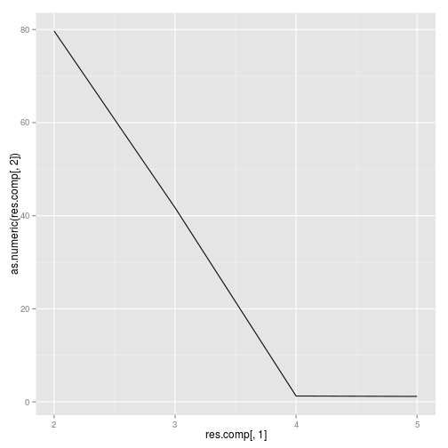
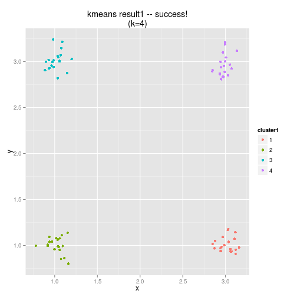
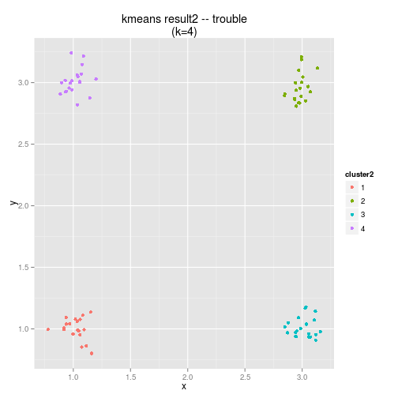
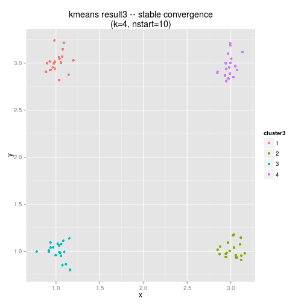
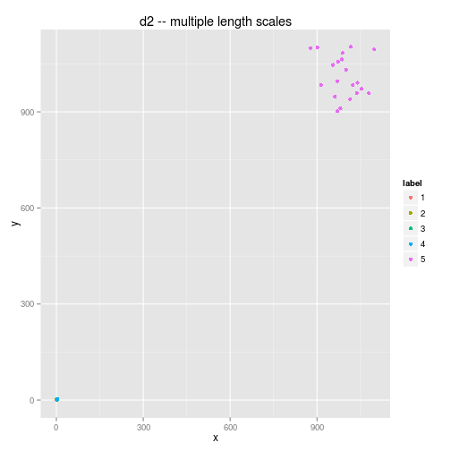
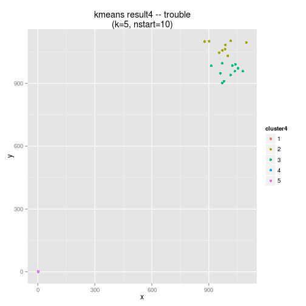
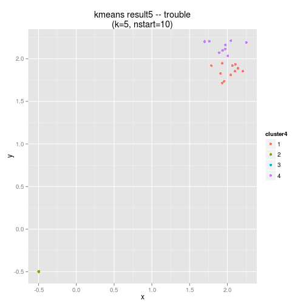
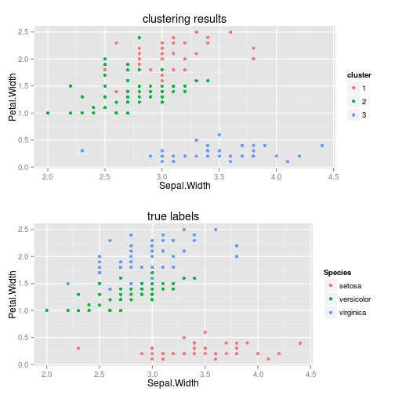

res.comp <- as.data.frame(rbind(c(2, result12$tot.withinss), c(3, result13$tot.withinss),
c(4, result14$tot.withinss), c(5, result15$tot.withinss)))
ggplot(res.comp, aes(res.comp[, 1], as.numeric(res.comp[, 2]))) + geom_line()

The Total within-cluster sum of squares decreases rapidly as it finds the 'real' clusters, and then levels off as it starts to make a stab at what might be a cluster.
Results
Here are the results...note the algorithm found clusters whose means are close to the true means of our synthetic clusters
# remember result1 came from this line above: result1 <- kmeans(d[,1:2], 4)
result1
## K-means clustering with 4 clusters of sizes 20, 20, 20, 20
##
## Cluster means:
## x y
## 1 3.012 1.0114
## 2 1.019 0.9994
## 3 1.014 3.0102
## 4 2.978 2.9596
##
## Clustering vector:
## 1 2 3 4 5 6 7 8 9 10 11 12 13 14 15 16 17 18 19 20 21 22 23 24 25
## 2 2 2 2 2 2 2 2 2 2 2 2 2 2 2 2 2 2 2 2 3 3 3 3 3
## 26 27 28 29 30 31 32 33 34 35 36 37 38 39 40 41 42 43 44 45 46 47 48 49 50
## 3 3 3 3 3 3 3 3 3 3 3 3 3 3 3 1 1 1 1 1 1 1 1 1 1
## 51 52 53 54 55 56 57 58 59 60 61 62 63 64 65 66 67 68 69 70 71 72 73 74 75
## 1 1 1 1 1 1 1 1 1 1 4 4 4 4 4 4 4 4 4 4 4 4 4 4 4
## 76 77 78 79 80
## 4 4 4 4 4
##
## Within cluster sum of squares by cluster:
## [1] 0.2836 0.3027 0.3342 0.3510
## (between_SS / total_SS = 99.2 %)
##
## Available components:
##
## [1] "cluster" "centers" "totss" "withinss"
## [5] "tot.withinss" "betweenss" "size"
plot results...we are looking good
d$cluster1 <- as.factor(result1$cluster)
ggplot(d, aes(x = x, y = y)) + geom_point(aes(colour = cluster1)) + ggtitle("kmeans result1 -- success!\n(k=4)")

suppose we repeat these steps...what do you expect to happen?
set.seed(2)
result2 <- kmeans(d[, 1:2], 4)
result2
## K-means clustering with 4 clusters of sizes 20, 20, 20, 20
##
## Cluster means:
## x y
## 1 1.019 0.9994
## 2 2.978 2.9596
## 3 3.012 1.0114
## 4 1.014 3.0102
##
## Clustering vector:
## 1 2 3 4 5 6 7 8 9 10 11 12 13 14 15 16 17 18 19 20 21 22 23 24 25
## 1 1 1 1 1 1 1 1 1 1 1 1 1 1 1 1 1 1 1 1 4 4 4 4 4
## 26 27 28 29 30 31 32 33 34 35 36 37 38 39 40 41 42 43 44 45 46 47 48 49 50
## 4 4 4 4 4 4 4 4 4 4 4 4 4 4 4 3 3 3 3 3 3 3 3 3 3
## 51 52 53 54 55 56 57 58 59 60 61 62 63 64 65 66 67 68 69 70 71 72 73 74 75
## 3 3 3 3 3 3 3 3 3 3 2 2 2 2 2 2 2 2 2 2 2 2 2 2 2
## 76 77 78 79 80
## 2 2 2 2 2
##
## Within cluster sum of squares by cluster:
## [1] 0.3027 0.3510 0.2836 0.3342
## (between_SS / total_SS = 99.2 %)
##
## Available components:
##
## [1] "cluster" "centers" "totss" "withinss"
## [5] "tot.withinss" "betweenss" "size"
result1$betweenss/result1$totss
result2$betweenss/result2$totss
Notice that the fit got worse!
The problem is, I don't notice the fit getting worse, even with a new random seed before I run the second kmeans I get exactly the same results both times.
(e.g. large decrease in between_SS / total_SS...also cluster means are not as good as before)
and this scatterplot shows that something is obviously not right...what happened?
d$cluster2 <- as.factor(result2$cluster)
ggplot(d, aes(x = x, y = y)) + geom_point(aes(colour = cluster2)) + ggtitle("kmeans result2 -- trouble\n(k=4)")

This instability is a result of the random initial seeds that the clustering algorithm uses if two initial seeds begin in the same cluster, then the algorithm will have difficulty finding all the clusters (in particular, the cluster which doesn't contain an initial seed will be difficult to identify)
(note that in any case, the algorithm will still return exactly as many clusters as you asked it to!)
So how can we create a more stable clustering fit? By repeating the fit several times and taking an average (this is effectively an ensemble clustering technique...we will talk about ensemble methods in more detail later)
result3 <- kmeans(d[, 1:2], 4, nstart = 10)
result3
## K-means clustering with 4 clusters of sizes 20, 20, 20, 20
##
## Cluster means:
## x y
## 1 1.014 3.0102
## 2 3.012 1.0114
## 3 1.019 0.9994
## 4 2.978 2.9596
##
## Clustering vector:
## 1 2 3 4 5 6 7 8 9 10 11 12 13 14 15 16 17 18 19 20 21 22 23 24 25
## 3 3 3 3 3 3 3 3 3 3 3 3 3 3 3 3 3 3 3 3 1 1 1 1 1
## 26 27 28 29 30 31 32 33 34 35 36 37 38 39 40 41 42 43 44 45 46 47 48 49 50
## 1 1 1 1 1 1 1 1 1 1 1 1 1 1 1 2 2 2 2 2 2 2 2 2 2
## 51 52 53 54 55 56 57 58 59 60 61 62 63 64 65 66 67 68 69 70 71 72 73 74 75
## 2 2 2 2 2 2 2 2 2 2 4 4 4 4 4 4 4 4 4 4 4 4 4 4 4
## 76 77 78 79 80
## 4 4 4 4 4
##
## Within cluster sum of squares by cluster:
## [1] 0.3342 0.2836 0.3027 0.3510
## (between_SS / total_SS = 99.2 %)
##
## Available components:
##
## [1] "cluster" "centers" "totss" "withinss"
## [5] "tot.withinss" "betweenss" "size"
d$cluster3 <- as.factor(result3$cluster)
ggplot(d, aes(x = x, y = y)) + geom_point(aes(colour = cluster3)) + ggtitle("kmeans result3 -- stable convergence\n(k=4, nstart=10)")

What happens if we introduce a new length scale into the problem? how many clusters are in the dataset now?
d2 <- rbind(d[, 1:3], data.frame(x = 1000 + rnorm(20, 0, 50), y = 1000 + rnorm(20,
0, 50), label = as.factor(rep(5, each = 20))))
ggplot(d2, aes(x = x, y = y)) + geom_point(aes(colour = label)) + ggtitle("d2 -- multiple length scales")

as you can see, things go haywire...recall that clustering results are kind of a heuristic
(in particular, not invariant to a change in units!)
result4 <- kmeans(d2[, 1:2], 5, nstart = 10)
d2$cluster4 <- as.factor(result4$cluster)
ggplot(d2, aes(x = x, y = y)) + geom_point(aes(colour = cluster4)) + ggtitle("kmeans result4 -- trouble\n(k=5, nstart=10)")

Lets standardis the variables and see what happens
ds <- data.frame(scale(d2[, 1:2], center = TRUE, scale = TRUE))
result5 <- kmeans(ds, 4, nstart = 10)
ds$cluster4 <- as.factor(result5$cluster)
ggplot(ds, aes(x = x, y = y)) + geom_point(aes(colour = cluster4)) + ggtitle("kmeans result5 -- trouble\n(k=5, nstart=10)")

now let's try k-means clustering with the iris dataset
iris.result <- kmeans(iris[, 1:4], 3)
look at clustering results...you can already tell something is up
## [1] 3 3 3 3 3 3 3 3 3 3 3 3 3 3 3 3 3 3 3 3 3 3 3 3 3 3 3 3 3 3 3 3 3 3 3
## [36] 3 3 3 3 3 3 3 3 3 3 3 3 3 3 3 2 2 1 2 2 2 2 2 2 2 2 2 2 2 2 2 2 2 2 2
## [71] 2 2 2 2 2 2 2 1 2 2 2 2 2 2 2 2 2 2 2 2 2 2 2 2 2 2 2 2 2 2 1 2 1 1 1
## [106] 1 2 1 1 1 1 1 1 2 2 1 1 1 1 2 1 2 1 2 1 1 2 2 1 1 1 1 1 2 1 1 1 1 2 1
## [141] 1 1 2 1 1 1 2 1 1 2
Combine clustering results with input data (as factor)
Let's look at the scatterplots of clustering results & true labels together (using package gridExtra)
First install this guy
if ("gridExtra" %in% rownames(installed.packages()) == FALSE) {
install.packages("gridExtra")
}
library(gridExtra)
## Loading required package: grid
now create our two scatterplots...note that ggplot returns an *object* which can be stored!
iris2 <- cbind(iris, cluster = as.factor(iris.result$cluster))
p1 <- ggplot(iris2, aes(x = Sepal.Width, y = Petal.Width)) + geom_point(aes(colour = cluster)) +
ggtitle("clustering results")
p2 <- ggplot(iris, aes(x = Sepal.Width, y = Petal.Width)) + geom_point(aes(colour = Species)) +
ggtitle("true labels")
grid.arrange(p1, p2)

so what is going on here?
although clustering is a unsupervised learning technique it does an OK job at matching known groups